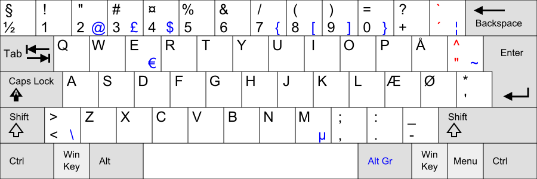

| Function keys | |
| F1 | Decrease keyboard octave |
| F2 | Increase keyboard octave |
| F3 | Switch mute on/off for current editor track |
| F4 | Switch solo on/off for current editor track |
| F5 | Show/hide Editor |
| F6 | Show/hide Blocklist/Playlist |
| F7 | Show/hide Mixer |
| F8 | Show/hide the "Sequencer" tab |
| F9 | Show/hide the "Instrument" tab |
| F10 | Show/hide the "Edit" tab |
| F11 | Switch full screen mode.
(Works for most windows, including this one.) |
| F12 | Select instrument for the current editor track |
| Misc | |
| Left Alt | Show/hide the menus, and start/stop navigating the menus using the keyboard |
| Tab | Switch window configuration |
| Left Ctrl + Z | Undo |
| Left Ctrl + Left Shift + Z | Redo |
| Player | |
| Right shift | Play current block |
| Right shift + Space | Play current block from current position |
| AltGr + Space | Play song from the beginning |
| Right Shift + AltGr + Space | Play song from current position |
| Left Meta (Win) + Space | Play range |
| Space | Stop player, and tell all instruments to stop playing |
| Editor - View | |
| Left Ctrl + M | Fit all content of the current block into the visible area |
| Left Shift + Up arrow | Decrease Line Zoom |
| Left Shift + Down arrow | Increase Line Zoom |
| Editor - Navigation | |
| Left Ctrl + J | Versatile cursor move |
| Right Shift + Right Arrow | Move cursor to the next track |
| Right Shift + Left Arrow | Move cursor to the previous track |
| Keypad 0/1/2/3/4/5/6/7/8/9 | Move cursor to track 0/1/2/3/4/5/6/7/8/9 |
| Left Ctrl + Keypad 0/1/2/3/4/5/6/7/8/9 | Move cursor to track 10/11/12/13/14/15/16/17/18/19 |
| Left Ctrl + A | Select previous block (Note: QWERTY keyboard A!)

|
| Left Ctrl + F | Select previous block (Note: QWERTY keyboard F!)
|
| Editor - Track on/off | |
| Keypad Enter | Switch track on/off |
| Left Shift + Keypad 0/1/2/3/4/5/6/7/8/9 | Switch track 0/1/2/3/4/5/6/7/8/9 on/off |
| Left Ctrl + Left Shift + Keypad 0/1/2/3/4/5/6/7/8/9 | Switch track 10/11/12/13/14/15/16/17/18/19 on/off |
| Left Ctrl + Keypad Enter | Turn all tracks on |
| Left Shift + Keypad Enter | Switch solo for current track on/off |
| Left Alt + Keypad 0/1/2/3/4/5/6/7/8/9 | Switch solo for track 0/1/2/3/4/5/6/7/8/9 on/off |
| Left Ctrl + Left Alt + Keypad 0/1/2/3/4/5/6/7/8/9 | Switch solo for track 10/11/12/13/14/15/16/17/18/19 on/off |
| Editor - Clipboard | |
| Left Meta (Win) + X/C/V | Cut/Copy/Paste range |
| Left Alt + X/C/V | Cut/Copy/Paste track |
| Left Ctrl + X/C/V | Cut/Copy/Paste block |
| Editor - Editing | |
| Left Alt + Up Arrow | Delete line |
| Left Alt + Down Arrow | Insert line |
| Backspace | Delete line, but only in the current track |
| Left Alt + Backspace | Insert line, but only in the current track |
| Editor - General roles of the Qualifier keys | |
| Alt Gr | Operates on the current note |
| Left Meta (Win) | Operates on the current range |
| Left Alt | Operates on the current track |
| Left Ctrl | Operates on the current block |
| Left Shift | Operates on lines |
| Right Shift | Operates on line navigation |
| Help windows | |
| Left Alt + Left Arrow | Go to previous page |
| Left Alt + Right Arrow | Go to next page |
| F5 | Reload page |
| Ctrl + R | Reload page |
| Ctrl + F | Search |
| F3 | Repeat search |
Note that on an Apple keyboard, the "Meta (win)" keys are mapped to the "command"/"cmd" keys. In addition, the "Alt" key is sometimes called "option" on an Apple keyboard.